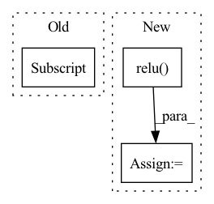

Pattern ID :867
Before Change
W = self.encoder.src_embedding.get_embedding().T
mask = x.view(-1).eq(self.MASK)
enc_output = enc_output.view(-1, self.d_model)[mask]
logits = torch.matmul(enc_output, W)
outputs = [logits]After Change
enc_output = enc_outputs[0]
if self.activation == "relu":
enc_output = F.relu( enc_output)
elif self.activation == "gelu":
enc_output = gelu_new(enc_output)
enc_output = self.norm(enc_output)
if self.share_emb_out_proj == False:
W = self.W
else:
W = self.encoder.src_embedding.get_embedding().T
logits = torch.matmul(enc_output, W)
outputs = [logits]
if return_states == True:
outputs = outputs + enc_outputs
if compute_loss == True:
loss = self.loss_fn(outputs, targets)
outputs = [loss] + outputs
return outputs
In pattern: SUPERPATTERN
Frequency: 3
Non-data size: 3
Instances Fragment ID: 2754762
Project Name: yaoxiaoyuan/mimix
Commit Name: 59b6082bb310a2a17c2ac30225e300124904cc2f
Time: 2022-06-21
Author: sbsbsbsbsb945@gmail.com
File Name: src/models.py
M Class Name: TransformerBiLM
N Class Name: TransformerBiLM
M Method Name: forward(5)
N Method Name: forward(3)
M Parent Class: nn.Module
N Parent Class: nn.Module
M File Name: src/models.py
N File Name: src/models.py
M Start Line: 1165
M End Line: 1179
N Start Line: 1399
N End Line: 1433
Before Change
ign = ign.unsqueeze(-1).expand_as(batch_label) // shape: (batch_size, num_priors, num_classes)
batch_label[ign] *= -1
mask = batch_label >= 0
loss_c = self.focal_loss(conf_data[mask] , batch_label[mask], reduction="mean")
return (loss_l, loss_c)
After Change
with torch.no_grad():
batch_label = torch.zeros(num * num_priors, num_classes + 1).cuda().scatter_(1, conf_t.view(-1, 1), 1)
batch_label = batch_label[:, 1:].view(num, num_priors, num_classes) // shape: (batch_size, num_priors, num_classes)
score = (overlap_t-3.0).relu() .unsqueeze(-1).expand_as(batch_label)
batch_label = batch_label * score
mask = batch_label >= 0
loss_c = self.gfocal_loss(conf_data, batch_label, mask)
return (loss_l, loss_c) Fragment ID: 2754761
Project Name: zhangheng19931123/mutualguide
Commit Name: 85219f93a8d5b54cb3ed9f06d86bb64d3f6d3552
Time: 2021-10-02
Author: heng.zhang@irisa.fr
File Name: utils/loss/multibox_loss.py
M Class Name: MultiBoxLoss
N Class Name: MultiBoxLoss
M Method Name: forward(4)
N Method Name: forward(4)
M Parent Class: nn.Module
N Parent Class: nn.Module
M File Name: utils/loss/multibox_loss.py
N File Name: utils/loss/multibox_loss.py
M Start Line: 27
M End Line: 102
N Start Line: 39
N End Line: 110
Before Change
def forward(self, x: torch.Tensor, label: int):
batch_size = x.size(0)
y_ = torch.zeros((batch_size, self.num_classes))
y_[:, label] = 1.0
y_ = self.fc2(y_)
y_ = F.relu(y_)
x = torch.cat([x, y_], dim=1)After Change
def forward(self, noise: torch.Tensor, poison_label: torch.LongTensor) -> torch.Tensor:
_label = onehot_label(poison_label, self.num_classes)
y_ = self.fc2(_label)
y_ = self.relu( y_)
x = torch.cat([x, y_], dim=1)
x = self.fc(x)
x = x.view(-1, 64, self.data_shape[1], self.data_shape[2])
x = self.bn1(x)
x = self.relu(x)
x = self.deconv1(x)
x = self.bn2(x)
x = self.relu(x)
x = self.deconv2(x)
x = self.sigmoid(x)
return x Fragment ID: 2754766
Project Name: ain-soph/trojanzoo
Commit Name: e9332c319d243156837f64d6d35b842bdbc5378b
Time: 2020-07-12
Author: ain-soph@live.com
File Name: trojanzoo/defense/backdoor/deep_inspect.py
M Class Name: Generator
N Class Name: Generator
M Method Name: forward(3)
N Method Name: forward(3)
M Parent Class: nn.Module
N Parent Class: nn.Module
M File Name: trojanzoo/defense/backdoor/deep_inspect.py
N File Name: trojanzoo/defense/backdoor/deep_inspect.py
M Start Line: 120
M End Line: 134
N Start Line: 160
N End Line: 172